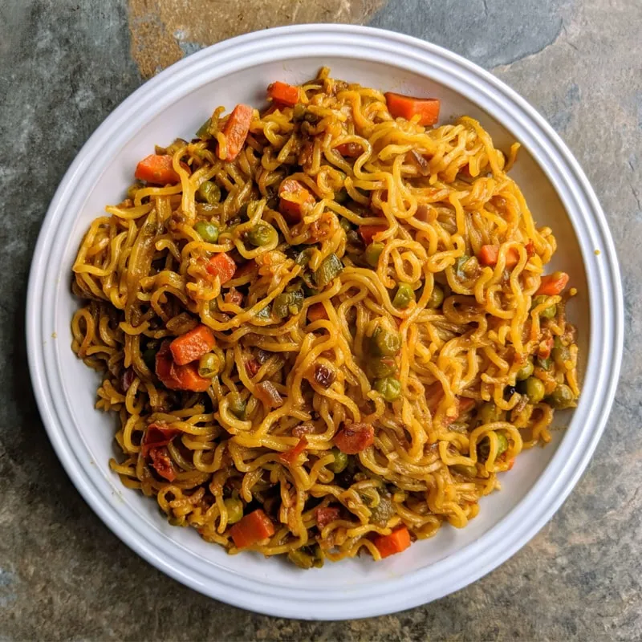

Maggie is a Indian styled noodles .It's rich with spices due to the masalas that is added into it.Often people have it as a evening snack . Each house has a different style of preparing it.Few love it to be soupy,few others filled with vegetables,butter and some extra masalas apart from the masala that come in the packet and the others just plain.Especially on a rainly day a glass of tea with mmaggie would just be out of this worls